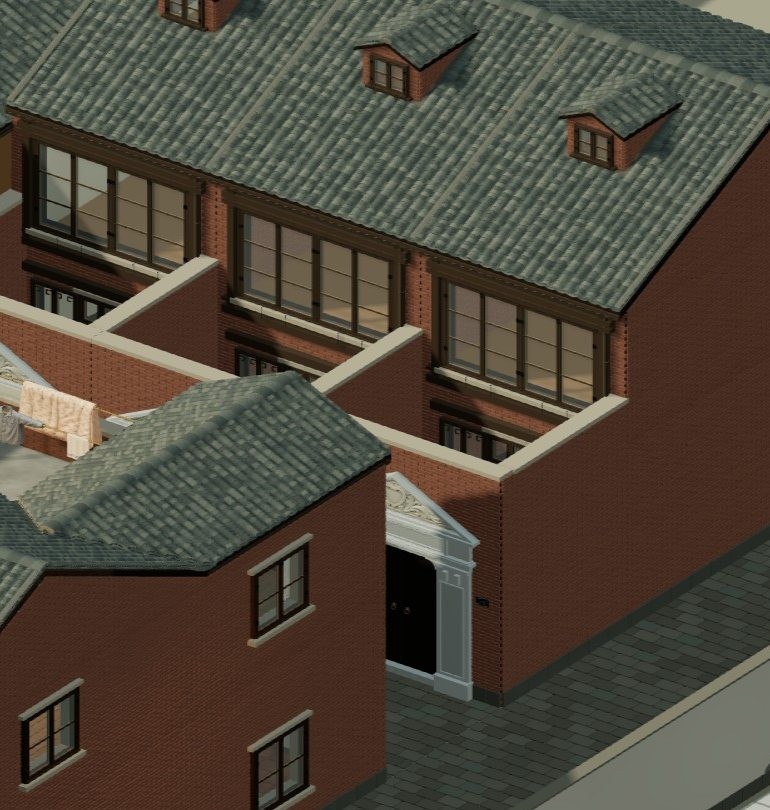
AHOLO LUX3D 黑客松 · 项目报告书
弄
弄堂深处
一九九四年 上海 回阿婆家
一款沪语小游戏：走进 1994 年上海石库门里的阿婆家，点一件老物件，听一句上海话。
周均儒 RullerZhou 2026.11
作
01 作品
点一件老物件，听一句上海话
玩家是不会讲上海话的小辈，回到 1994 年的阿婆家。阿婆出门买小菜了，客堂桌上压着一张字条：“侬自家看看”。
从天井走进客堂、灶披间、亭子间、晒台……每间屋里有几件老物件。点一下，镜头凑近，物件自己动起来，弹出一张沪语词卡：上海话写法、普通话意思、一句家常介绍，再按一下，就能听到我亲口念的上海话。
16
处空间 整栋石库门
14
间屋 各有小剧场
64
张沪语词卡 每张都由我录音
186
次 Lux3D 生成
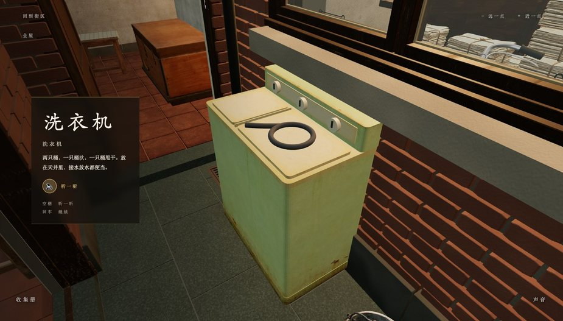
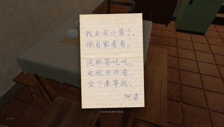
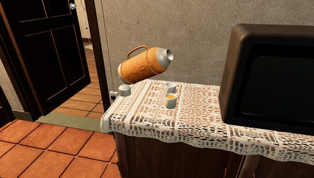
弄堂深处 · 项目报告书 2 / 26
缘
02 缘起
从“找不同”到“学说话”
最初
我想做“年代找茬”：在 1994 年的屋里藏几件穿越来的现代物品，让玩家找出来。
做着做着
房子越做越真，最打动人的反而是老物件本身。可它们的名字和叫法，很多年轻人已经不会说了。
11 月 15 日
改方向：做一款沪语推广小游戏，用老房子和老物件把上海话带出来。
我想让玩家指着一件老物件， 就能听到它用上海话怎么叫。
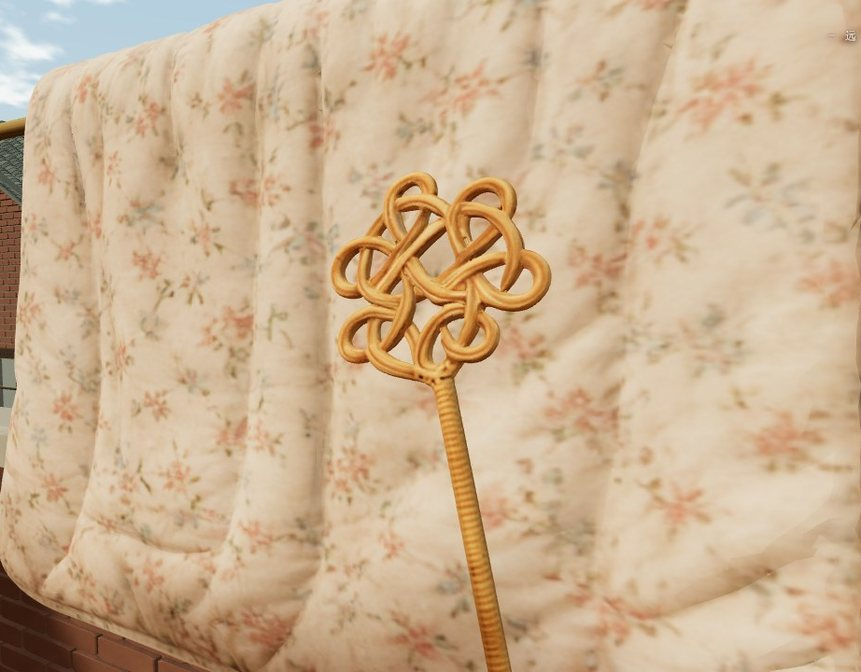
我最先想到的例子：点晒台上的藤拍，藤拍拍三下被头，词卡念出“藤拍”。现在游戏里就是这样。
弄堂深处 · 项目报告书 3 / 26
程
03 过程
十二天：从一张概念图到一栋能玩的老房子
11·07
立项
定下 1994 年上海石库门。AI 概念图结构太乱，先用 three.js 搭方块粗模。
11·08
整屋定型
整屋模型改了五版才像里弄；接着第一次用 Lux3D 做门头浮雕和铜门环。
11·09
厨房定流程
调研 → 拆件 → 生成 → 修补 → 做旧，写成《制作流程与复盘》。
11·10–13
逐间建完
一楼八处、亭子间、二楼五间、晒台、阁楼，共 16 处空间。
11·14
年代盘点
全屋查年代破绽：纸箱、课表、奖状、退休证逐项核对。
11·15
转向沪语
从找茬改成沪语推广；首页做成整排弄堂街区。
11·17
定下玩法
固定机位加“物件带人”，客堂小剧场成为全屋模板。
11·18
录音与声音
我录完 64 张词卡，配上定制音乐和 19 个音效。
弄堂深处 · 项目报告书 4 / 26
作
04 成果
一栋石库门、一排弄堂、十四间能走进去的屋
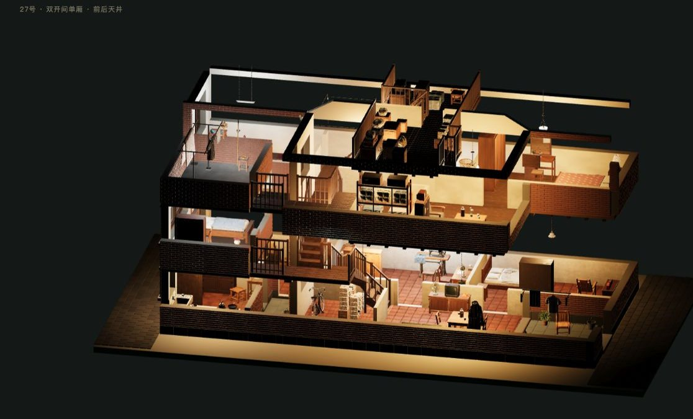
整栋 B1 石库门的夜景剖面：每间屋都有灯，家具、门窗、柜门都能开合。
整栋石库门：天井、客堂、前中后厢、灶披间、亭子间、二楼五间、晒台、阁楼
三排十户的弄堂街区做首页，门牌“成都北路 27”
14 间屋各有一段小剧场，64 张沪语词卡
全部在浏览器里实时渲染，也能离线打开
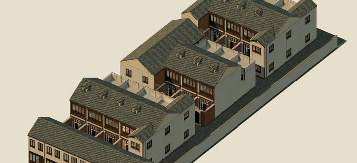
三排十户的街区模型
弄堂深处 · 项目报告书 5 / 26
考
05 调研
先查清楚，再动手做
296 条
有原文链接、可逐条点开的资料 其中 161 条写明了用在哪里
48 个
调研专题 464 份研究与制作记录
401 张
参考图与过程图 21 份原文存档
约 40 张
我找来的照片和截图 外加二十多条亲历记忆
报刊与居民回忆
澎湃、新民晚报、解放日报、文汇报、新闻晨报
政府、方志与档案
《上海通志》、区政府网、民政局、浦东档案馆
统计与国家标准
统计年鉴、人民日报 1990–94、瓦楞纸箱国标
博物馆馆藏
台湾历史博物馆痰盂、港大竹椅、上图藏品展
老照片与纪实摄影
1993 年上海厨房、《上海蜗居》、1990《中国家居》
旧货与实物
孔夫子旧书网、997788 旧货、上海牌 7120 手表
书籍、论文与企业史
《石库门建筑的营造技艺》、十七棉年报
影视与文学原文
《孽债》美术采访、鲁迅《门外文谈》
我的亲历记忆
风钩、痰盂盖、藤拍、一串钥匙、555 牌台钟
完整清单按专题分组，每条附用途：参考资料页；本报告最后三页是节选。
弄堂深处 · 项目报告书 6 / 26
考
06 调研
每件东西都要有来历
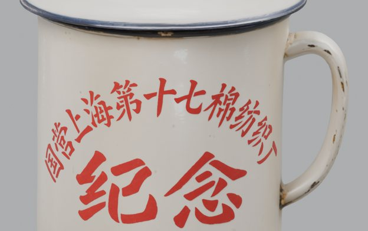
搪瓷杯上的厂名
照片上原本印着“502”。查到报道里的“国营上海第十七棉纺织厂”红字搪瓷杯，再照我找到的纪念杯式样排版，改成弧形厂名和“1984”。
来源：上观新闻：国棉十七厂
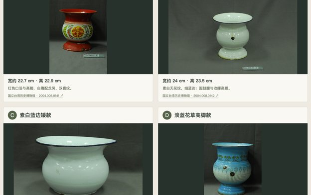
四种痰盂
全屋原本一个式样。对照博物馆馆藏和老日杂店实物，做出高脚、矮款等四种，再配上我记得的塑料盖。
来源：台湾历史博物馆馆藏 · 澎湃：在古董日杂店看上海生活
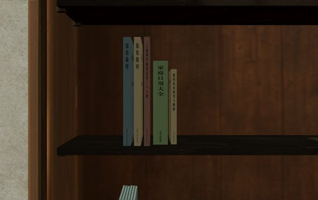
书橱里的书
占位色块换成 1994 年以前真实出版的书刊：《服装裁剪》《简·爱》《读者文摘》……版次对照孔夫子旧书网的实物。
弄堂深处 · 项目报告书 7 / 26
考
07 调研
AI 会想当然，我的记忆纠正它
AI 原本
我说
改成
后厢加一间厕浴，装热水器淋浴
“石库门老房子要 2000 年后改造才有（抽水马桶）……以前用痰盂”
卧房放痰盂，厨房里洗头，后厢收澡盆
阁楼和杂物间堆满纸箱
“那年头哪里来纸箱啊”
全屋 10 只纸箱换成皮箱、竹篮、布包
风钩装在窗外
“是在屋内的，窗户往外推的”
风钩全部改到室内，开合逐扇检查
晒台只晾衣服
“你少了上海人很重要的一个，藤拍”
补上藤拍，按晾衣“三件套”重摆
门把手凭想象画成实心圆球
我找来两张门锁实物截图
改成略扁的圆鼓、内凹锁孔
依据：中国青年报：上海马桶革命 · 澎湃：七十二家房客⑨ · 澎湃：百年博文女校的修缮 · 新民晚报：晾衣裳的“三件套”
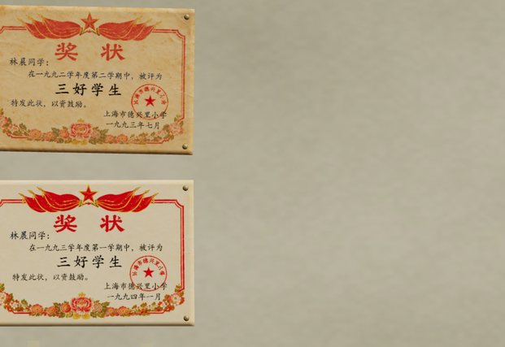
“查不到就如实汇报”
这是我给 AI 定的规矩。孩子房的课本、奖状、课程表逐项对时间线；查不到年份的物件，记录里标“推定”，不写成史实。
弄堂深处 · 项目报告书 8 / 26
建
08 建造
先定结构，再画好看的图
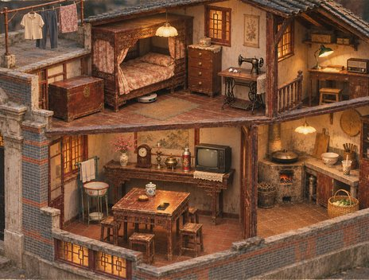
1 AI 风格图
定下写实、老胶片的气质。但房子结构是乱的，只看风格和光照。
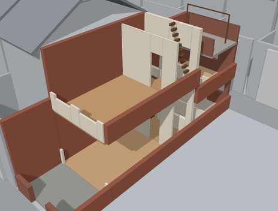
2 方块粗模
按资料搭单开间：天井 → 客堂 → 楼梯 → 灶披间，亭子间在半层。
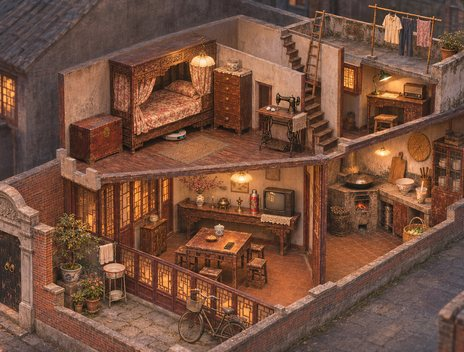
3 按粗模重画
用粗模截图约束 AI，重画出结构对的概念图。
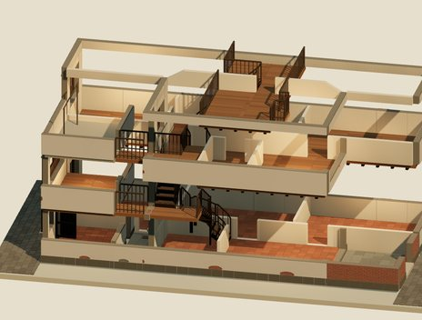
4 整屋模型
three.js 整屋，之后每间房都装在它上面。
同样的做法贯穿全程：先用真实尺寸的白模定空间，再让 AI 出概念图。概念图只决定风格，结构以资料和白模为准。
空间顺序的依据：中国非遗网：石库门里弄建筑营造技艺 · 澎湃：“石库门”名称的由来 · 陈中伟：石库门建筑的营造技艺
弄堂深处 · 项目报告书 9 / 26
建
09 建造
房子本身也改了五版，才像老弄堂
这一版做了什么
我看完说
V1
11·07
单开间整屋：天井、客堂、楼梯、灶披间、亭子间按资料排好
“怎么规整得像商品房一样？”
V2
11·07 夜
4,968 片实体瓦；门窗分出框、扇、棂、板和玻璃，不用贴图
“像小别墅，不像石库门老房子”
V3
11·08
重查里弄实例：主户改成双开间带厢房的端户，街坊排成 4／3／3 十户
“请按照这套结构重新搞模型”
V3.1
11·08
墙面做旧收回到概念图的程度，补上漏建的邻户老虎窗
“为啥这一排只有一个老虎窗？？”
V3.2
11·08
查松寿里实景、春阳里图纸：老虎窗不按“每排几扇”，而是跟着每户的阁层
“那你去查”
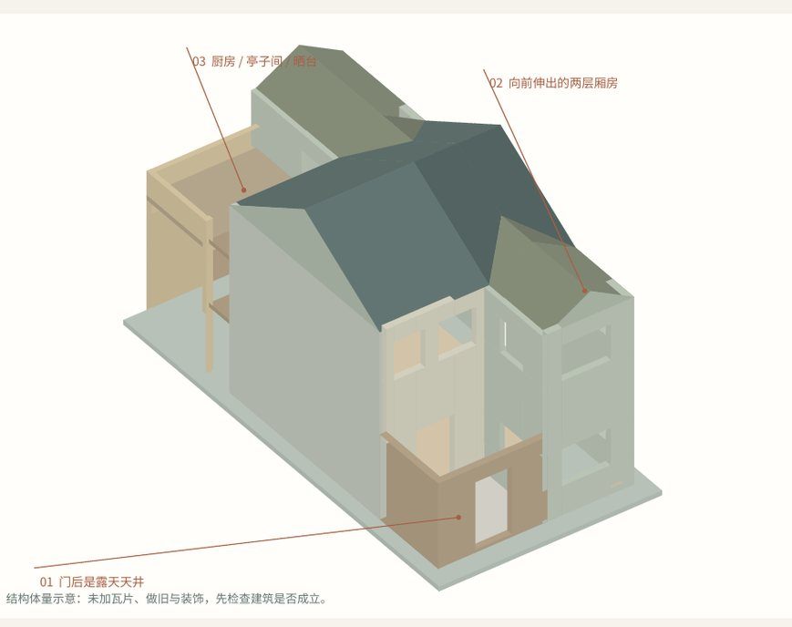
V3 方案图：门后是露天的前天井，主屋退后，厢房前伸，屋后接低矮的灶披间、亭子间和晒台。
弄堂深处 · 项目报告书 10 / 26
建
10 建造
里弄怎么排：每个尺寸都找了实例
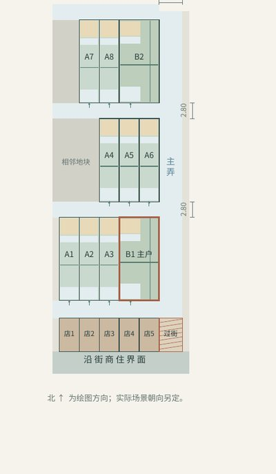
V3 街坊总图：三排 4／3／3 户，前排沿街店屋
实例与资料
查到了什么
落到模型里
普通窄开间、端部带厢房、沿街商铺是三类不同单元
主户放在排尾，做成带厢房的端户
双开间石库门图例
厢房一直延续到二楼
侧厢做两层；矮的是门墙和屋后附屋
主弄宽 4.25 米，支弄 2.1–3.5 米；有沿街商铺和过街入口
主弄 4.2 米、支弄 2.8 米；沿街 6 开间，一间做过街入口
改造时把东西向楼梯改成了南北向
修缮后的布局不当原貌
同一段屋坡至少三处老虎窗；阁层的天窗随使用改过
十户各有阁层，每户一扇老虎窗
尺寸都是参照实例定的设计值，不是哪一栋老房子的实测复原。瓦片按上海绿化市容局介绍的小青瓦规格（长 200–250 毫米、厚约 6 毫米）逐片建模。
弄堂深处 · 项目报告书 11 / 26
建
11 建造
门头、红砖、门牌：房子外面的依据
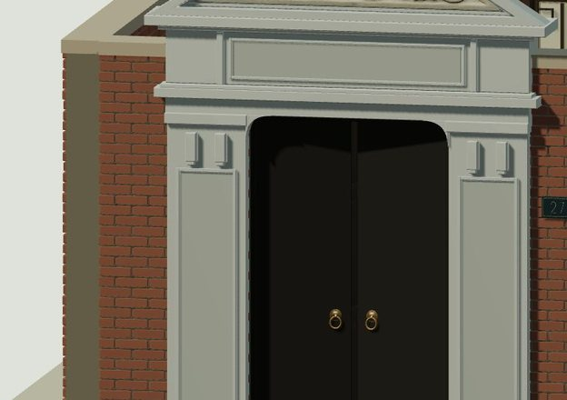
门头
参考南昌路渔阳里 5 号实景、成都北路旧址门头：红砖三角山花，灰石门框，层叠线脚。
来源：新民晚报：寻访渔阳里 5 号 · 上海市文旅局
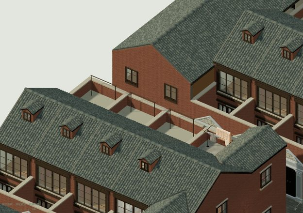
邻户与屋顶
依据步高里、辅德里外墙给邻户补红砖，留水泥仿石墙脚；老虎窗、山墙按里弄常见做法。
来源：步高里 · 二大会址（辅德里）修缮
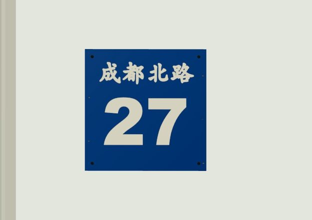
门牌
新民晚报记载的 1997 年老搪瓷门牌：上排路名、下排大号数字。定为“成都北路 27”。
来源：新民晚报：我收藏的老门牌
弄堂深处 · 项目报告书 12 / 26
建
12 建造
一件物件从资料到进屋，要走八步
调研用途 与年代
量真实 空间
概念图 确认
按用途 拆件
Lux3D 生成
本地检查 与修补
做旧 贴图
整屋 验收
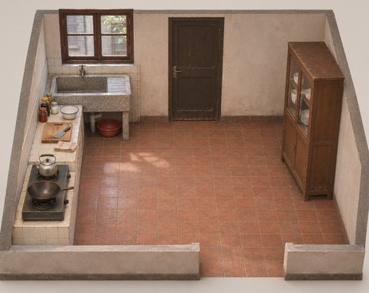
概念图：一家独用的灶披间
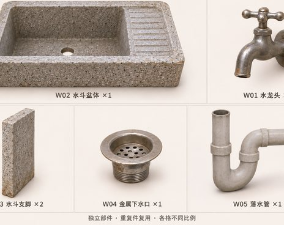
拆件：水斗拆成 5 类
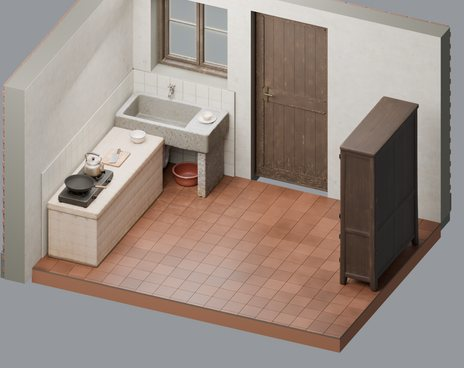
做旧：整墙共同旧感
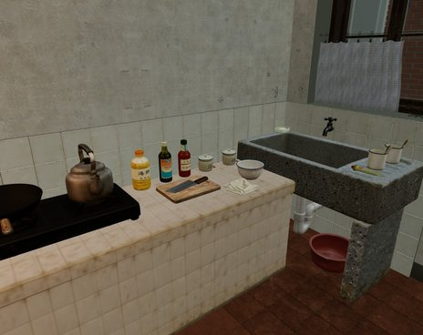
游戏里的灶披间
厨房最初列出 34 种部件，最后只生成 18 类，其余靠复用和本地制作。这套流程写进《制作流程与复盘》，后面每间屋都照着走。
弄堂深处 · 项目报告书 13 / 26
生
13 Lux3D
Lux3D：屋里大部分家什都是它生成的
186
次生成任务
151
件进入交付包
约 3,000
积分
36
本积分账本 每批先报价再授权
家具 床、衣柜、写字台、沙发、缝纫机
织物 被褥床单、晾晒衣物、八种衣服
器皿 搪瓷碗、痰盂、灯罩、酱油瓶
竹藤 竹椅、竹篮、藤拍、竹箱
食物 馄饨、大饼、油条、粢饭团
弄堂深处 · 项目报告书 14 / 26
生
14 Lux3D
擅长：有使用痕迹的软东西和老器物
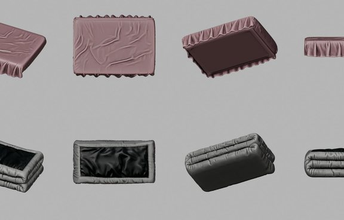
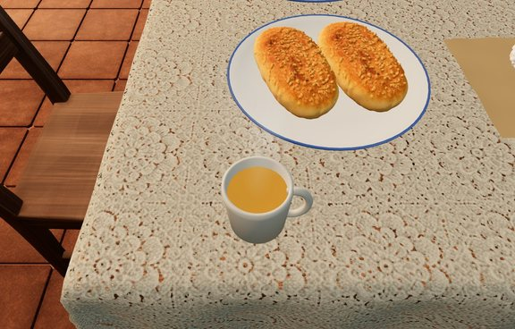
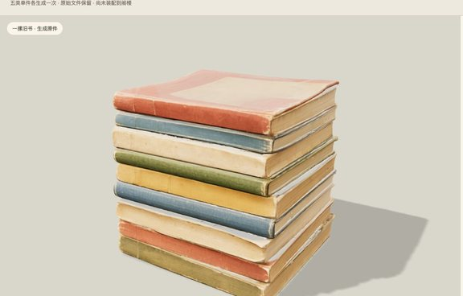
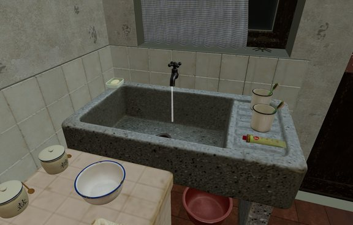
床品、衣服、竹编、藤拍、食物：褶皱、鼓包、编织都很自然
单件小物一次成功率高，空腔和开孔是真的：门环中空、盆底排水孔、雨水斗贯通
衣架和大衣放在一起生成，才有真实的垂坠
软的小件用 1 积分的快速档，细节已经够用
左上：床品生成原件；右上：早点；左下：阁楼的竹箱和旧书堆；右下：灶披间水斗
弄堂深处 · 项目报告书 15 / 26
生
15 Lux3D
不擅长的，就在本地修好
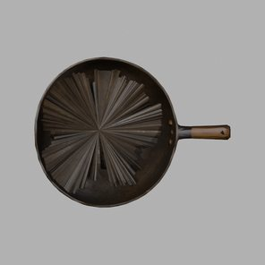
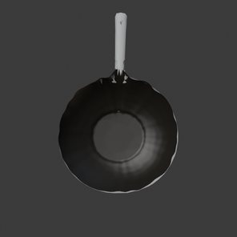
炒锅：生成原件内腔折叠 → 按锅底轮廓重建锅壁，保留原木柄
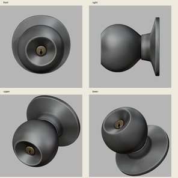
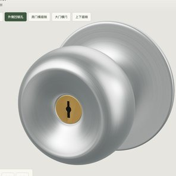
门把手：生成两次都不规整 → 本地从零建模，装上 10 扇门
规整金属件 我的结论：“这个模型对于这种规整的不行”
内部和底面 炒锅内腔折叠、竹匾底面破洞、樟木箱盖多出一层底板
宽轮廓 三角浮雕第一次被生成成五边形
文字 字会走样，厂名、品牌、门牌全部改用本地贴图
也放弃过
折叠床：生成成功，放进屋里却认不出是折叠床
热水瓶：单层空壳，拔了塞子能看穿，本地重做
自行车皮坐垫：形态不对，换回本地版
原件全部保留，修补版另存。全程几乎没有付费重试。
弄堂深处 · 项目报告书 16 / 26
生
16 Lux3D
我总结出的六条 Lux3D 用法
1
按用途拆件
会动、要复用、要精确对接的才拆开。柜门单独生成好开合，煤气灶整件生成。
2
规整件本地做
玻璃、层板、五金、灯泡、门窗在本地精确制作；家具、织物、器皿交给生成。
3
只取形状，贴图自己画
先用色块参考图生成形体，再贴上自己画的花布和品牌标签。
4
每件看背面、底面、内腔
外面好看不代表能用。八个方向渲染检查，原件保留可回退。
5
先报价，再授权
每批先列清单报积分，我来定额度，授权原话写进积分账本。
6
软小件用 1 积分档
馄饨、果盘、牙膏、床品用快速档；一盘小东西只生成一只再复制。
弄堂深处 · 项目报告书 17 / 26
建
17 建造
让房子看起来有人住过
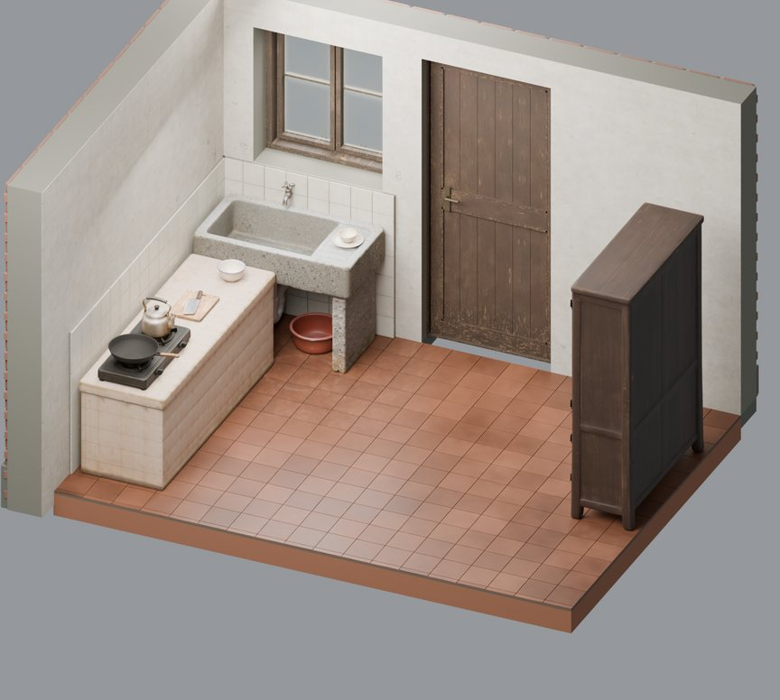
颜色、粗糙度、凹凸三张图一起做旧：整墙有共同的旧感，水斗、墙脚、门底、把手附近再加重。
木纹顺着构件方向；贴图跟着门扇走，开门时纹理不滑动。
我一次次指出“太新”“整片墙都要做旧”。做旧从水斗边的一个角落小样，扩展到四面墙、两扇门和所有窗。
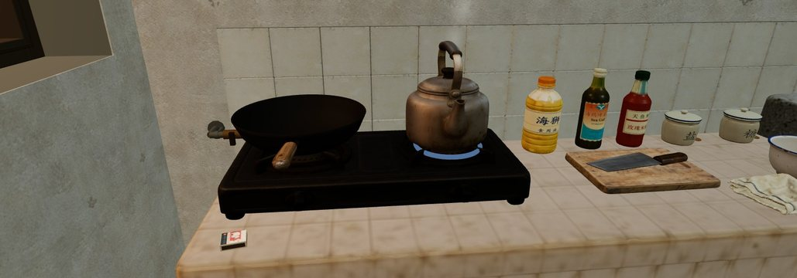
弄堂深处 · 项目报告书 18 / 26
玩
18 玩法
固定机位，让物件带着人走
×
站点式漫游
“像是中介看房一样，关键是这个周围的畸变也看得难受”
×
自由行走
小房间里处处受限，走两步就撞墙
✓
固定机位＋物件带人
镜头在人眼高度；点物件，镜头凑近，物件自己动起来：倒茶、挂外套、拍被头，然后弹出词卡
客堂的一串小剧场——挂衣裳、开茶叶橱、倒开水、开电视、坐下来吃四大金刚——成了全屋 14 间屋的模板。
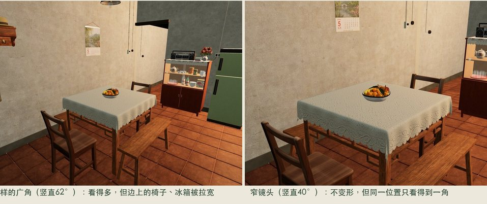
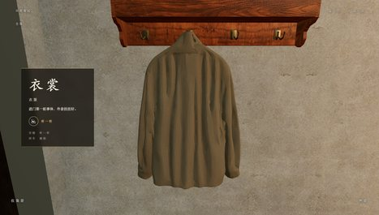
上：同一位置的广角与窄镜头对比，最后选了不变形的窄镜头；下：挂外套、倒开水
弄堂深处 · 项目报告书 19 / 26
沪
19 沪语
64 张词卡，每一句都是我亲口录的
词卡 沪语写法 · 普通话意思 · 一句家常介绍 · 「听一听」
口吻 普通话里夹一点上海话，像家里人说话，不像博物馆的说明牌
我整段 录音
自动转写 按编号切段
审听页逐张 听、改字
回填 游戏
录完再逐张审听，59 张按“像不像上海人说话”改了字，如“进门第一桩事体”。
吃茶 上海话里向，茶是要“吃”的。比如，吃茶，吃香烟，吃老酒。
声音：为游戏定制的背景音乐；19 个音效在浏览器里实时合成；词卡一念，音乐自动压低。
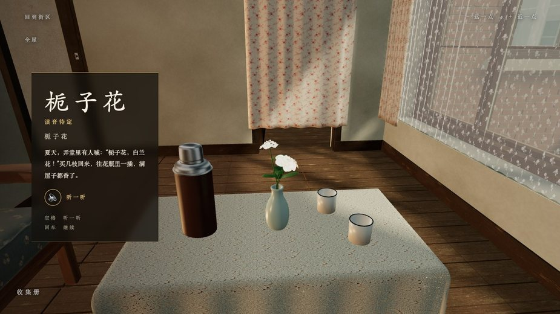
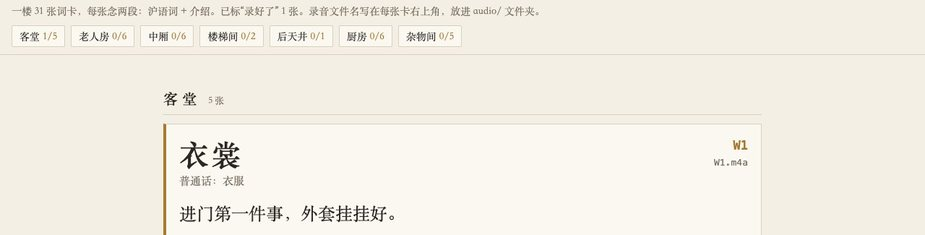
弄堂深处 · 项目报告书 20 / 26
技
20 技术
在浏览器里跑一整栋老房子
2,200 万
整排街区每帧三角面；进屋后只画当前房间
33.8 → 6.2 秒
快速版首次打开 传输 1.28 GB → 342 MB
25.7 → 7.2 秒
首页打开，近景街区提前烘焙
5.55 亿 → 178 万
离线单文件的脚本字符数：超过浏览器上限会崩溃，改成 18 组分块压缩
渲染 three.js 实时渲染，单文件离线页和按需加载的快速版
建模 Blender 无头脚本装配、修补、导出 GLB
验收 Playwright 驱动本机 Chrome，用真实鼠标键盘、两种窗口尺寸逐房走一遍
查错 共面闪烁采样检测（门框 159 处清零）；门窗柜门 31 个角度碰撞检查
保真 每次改动都核对其余九户和已确认的房间没有被连带改动
弄堂深处 · 项目报告书 21 / 26
协
21 协作
我和我的团队
周均儒
项目主导（我）
定方向和审美；用亲历记忆和考据把关；每间屋亲自验收；录下全部 64 张沪语
曦宝（Claude）
团队 · 结构与玩法
结构粗模与调研；灯具、窗帘、客堂重排等本地建模；首页、固定机位与小剧场框架；性能优化
云宝（Codex）
团队 · 生成与装配
逐间调研、概念图与拆件；Lux3D 批量生成与本地修补；整屋装配与导出；配音切段
积分账本
每批生成的授权原话与实际消耗
视觉确认记录
区分 AI 自检和我亲眼确认
《制作流程与复盘》
新会话接手不用重教
109 次提交
逐个文件暂存，可以回退
弄堂深处 · 项目报告书 22 / 26
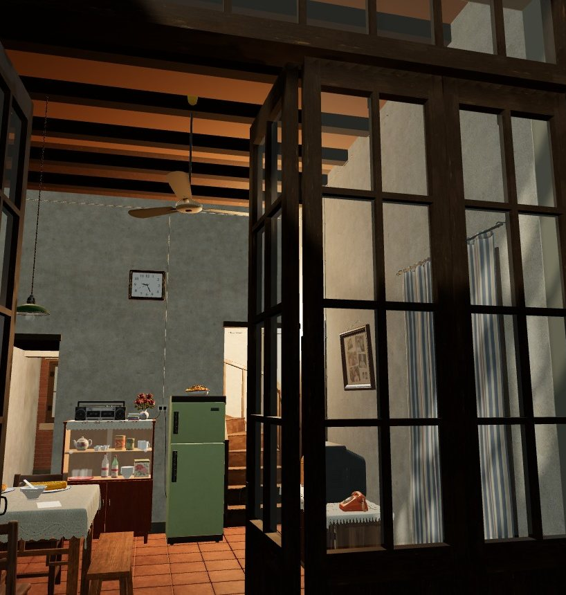
弄
侬自家看看
阿婆的字条，也是这个游戏想对玩家说的话：推开门，自己去看看那些老物件，听听它们用上海话怎么叫。
在线体验
电脑上用 Chrome 或 Edge 打开；第一次需要下载约 700MB，加载页会显示进度。
© 2026 周均儒 RullerZhou · github.com/rullerzhou-afk · 保留所有权利
附
22 附录
参考资料节选 一：建筑、里弄与街区
机构介绍 · 天井、客堂、楼梯、灶披间的空间序列及亭子间的错层关系
建筑沿革介绍 · 老式与新式、单开间与带厢房类型的空间比较
专家构造示意 · 辨认直梯、转弯、双跑梯及踏面、踢板、栏杆、起止柱
演讲实录 · 普通窄户、端部带厢房户、沿街商铺三类单元
项目任务书 · 主弄 4.25 米、支弄 2.1–3.5 米、沿街商铺与过街入口
施工方资料 · 原有楼梯在改造中换了方向；改造前已有阁层屋窗
跨年代居住回忆 · 黑木门、天井、客堂及竹竿晾晒的材料与用途
文史文章 · 老虎窗个数和大小并不一致
修缮报道 · 清水砖外墙、砖木构造与修缮前后室内外材料关系
机构介绍 · 小青瓦长 200–250 毫米、厚约 6 毫米
技术文章 · 小青瓦排瓦构造
后期实物照片 · 早期门头方案比较中的砖饰三角山花、石条直框
政府网站 · 成都北路石库门门头
机构介绍 · 红砖主体、水泥仿石墙脚
行业报道 · 外墙历年粉刷与修复
报纸 · 上排路名、下排号数的蓝底搪瓷门牌
修缮报道 · 传统木窗、外侧合页与细金属钩的形态比较
机构资料 · 灶披间、亭子间、晒台的上下关系
完整清单共 296 条，按房间和角落分组，每条附用途：参考资料页
弄堂深处 · 项目报告书 24 / 26
附
23 附录
参考资料节选 二：屋里的生活
实物照片 · 参考小木窗、独立燃气灶、锅碗、局部瓷砖与使用密度。
报道 · 区分九十年代不同阶段煤气与煤球炉的并存背景。
机构资料 · 说明冰箱在九十年代前已进入城镇家庭。
报道 · 灶披间挤入小台子、用来切菜斩肉包馄饨的生活线索。
跨年代生活回忆 · 解释过道煤炉和煤球常与共用厨房空间不足有关
1992—1996纪实摄影报道 · 九十年代上海弄堂晾晒衣被的生活活动
报道 · 旧缝纫机长期沿用和日常缝补。
报道 · 1980年陪嫁箱长久保留的家庭线索；素箱与金属锁扣参考。
报道 · 85后石库门居民回忆痰盂、浴盆和临时围挡。
实物照片 · 核对浅圆脸盆及高脚/有盖有提手痰盂。
生活回忆 · 活动长竹竿、穿袖和衣架两种挂法、支架和U形挑衣叉的操作
2020年展览采访与回忆 · 晒被用藤拍拍灰的用途
研究记录 · 辅助辨别平布、夹环、细杆等制作选择。
研究记录 · 上海弄堂住户对日光灯及供电变化的回忆。
报道 · 1994年影视布景里的床、五斗柜、兼用桌组合
报道 · 婚家具按房间大小置办，新旧并存
报道 · 参考厚机身电视、木家具和生活混用。
报道 · 淡水路住户保留皮箱、樟木箱与被头柜的回忆
完整清单共 296 条，按房间和角落分组，每条附用途：参考资料页
弄堂深处 · 项目报告书 25 / 26
附
24 附录
参考资料节选 三：物件、年代与沪语
报道 · 支撑印上海厂名的红字搪瓷杯这一物件线索。
研究记录 · 第1页记载1992年6月由原上海第十七棉纺织厂改制。
新闻 · 老人房词卡“退休证”：裕丰纱厂到国棉十七厂
实物照片 · 比较高脚、矮身、口沿、盖色与花纹。
报道 · 核对五斗橱、台钟、电视等可见形制。
报道 · 八十年代末白瓷瓶、果绿盖及烫金商标使用回忆
机构资料 · 1989段落所附旧包装形态
实物照片 · 印刷花边配毛笔手填正文
统计年鉴 · 1990 年每百户 78 台洗衣机
报纸 · 厨房调味品牌
新闻 · “三五”牌台钟与“三转一响”的说法
新闻 · 客堂词卡“四大金刚”
报纸 PDF · 婚房词卡“痰盂罐”：文中谈陪嫁痰盂罐
报纸 PDF · 婚房词卡“大橱”：文中谈“四十八只脚”
出版社 · 二楼书橱配书
旧书实物 · 中厢书橱 8 种书刊
文学原文 · 亭子间摊开的摘抄本
开源模型 · 沪语片段核对
完整清单共 296 条，按房间和角落分组，每条附用途：参考资料页
弄堂深处 · 项目报告书 26 / 26